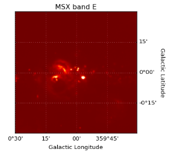

Reproject
Implementation in Julia of the reproject package by Thomas Robitaille, part of the Astropy project.
This package can be used to reproject Astronomical Images from one world coordinate to another. By reproject we mean re-gridding of images using interpolation (i.e changing the pixel resolution, orientation, coordinate system).
Installation
Reproject.jl is avilable for Julia 1.0 and later versions and can be installed with Julia built-in package manager.
julia> import Pkg; Pkg.add("Reproject")Usage
After installing the package, you can start using it with
julia> using Reproject
julia> result = reproject(input_data, output_projection)This returns a tuple of reprojected Image and footprint.
Reprojecting Images
To reproject Astronomical Images, primary requirements are Image data (2D Matrix), world cordinate frame of input Image and required output frame in which it needs to be reprojected.
The Image data and input frame is given together as an ImageHDU or FITS file or name of the FITS file in input_data. A keyword argument hdu_in can be given while using FITS or FITS file name to specify specific HDU in FITS file.
The output_projection is the output world coordinate frame and needs to be a a WCSTransform or an ImageHDU or FITS file or name of the FITS file. A keyword argument hdu_out can be given while using FITS or FITS file name to specify specific HDU in FITS file. WCS information is extracted from header when ImageHDU or FITS file is given as output_projection.
Order of Interpolation can be specified by keyword order (i.e 0, 1(default), 2). The dimensions of output Image can be given by keyword shape_out. This can be used to change resolution.
Example
julia> using Reproject, FITSIO
julia> input_data = FITS("gc_msx_e.fits")
julia> output_projection = FITS("gc_2mass_k.fits")
julia> result = reproject(input_data, output_projection, shape_out = (1000,1000), order = 2, hdu_in = 1, hdu_out = 1)Input Image:

Output:

Test files can be obtained from here.
Related Packages
Check out AstroImages.jl, which use this package to form coloured RGB image from 2D CCD Astromonical Images.
License
The reproject package is released under the terms of the BSD 3-Clause "New" or "Revised" License. The Reproject.jl package received written permission to be released under the MIT "Expat" License.